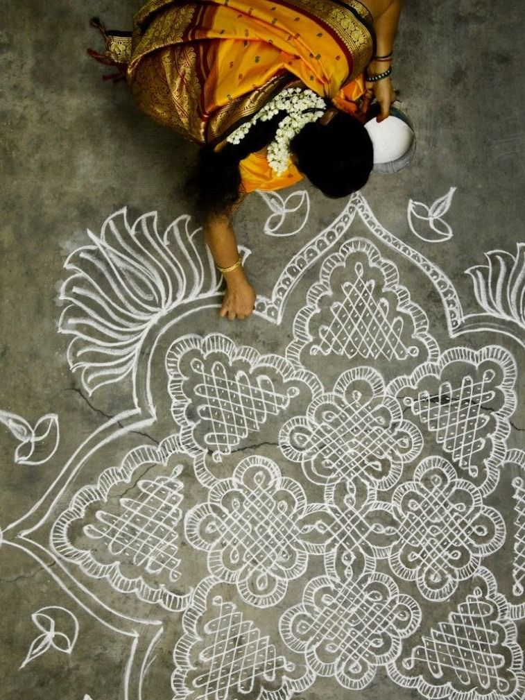
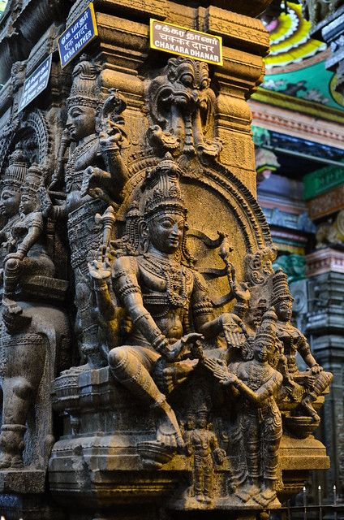
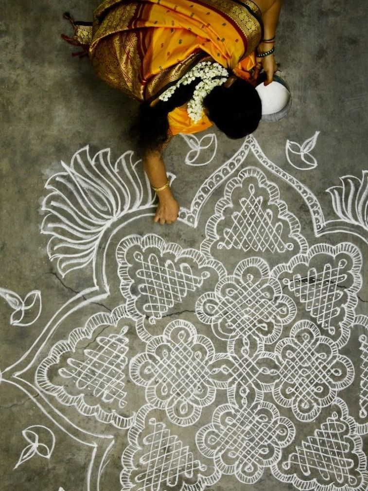
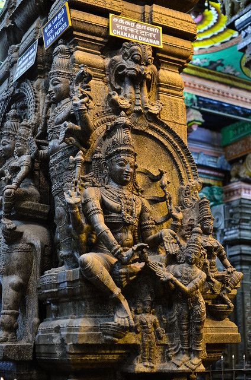

About Ayanam
Ayanam bridges ancient Hindu timekeeping with today’s Gregorian calendar. We help you trace Tithi, Nakshatra, and Maasa for any date — connecting your cultural roots with your digital present.
Our Aim
We want to make spiritual calendars feel simple and accessible again. Future versions of Ayanam will include a full-fledged calendar, user login, personalized reminders for Tithis, Nakshatras, and festivals — all synced with your daily life.
Meet the Team
Srivatsan S
Lead - Tech & Core Logic
Handled everything from backend data parsing to frontend integration and UI flow.
S Dileep
Design & UI/UX
Worked on layout, visuals, and consistency of user experience across all screens.
Shreyan B Shetty
Data Systems
Collected and structured the Panchanga data used across calculations.